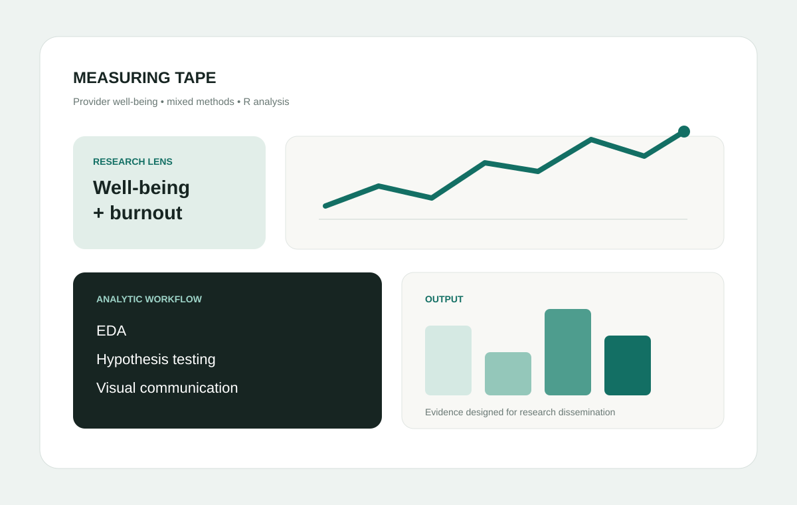
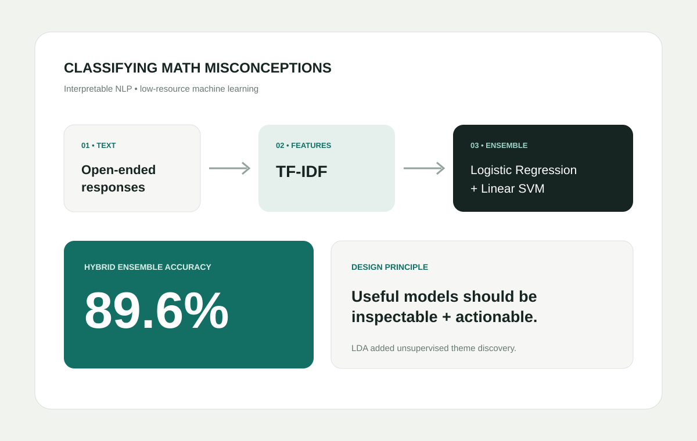
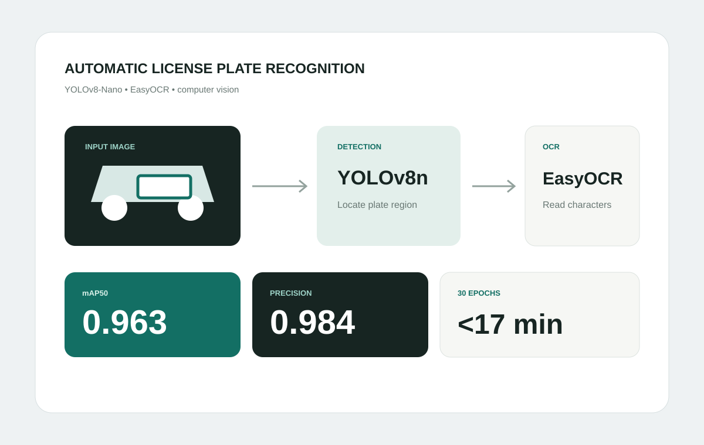

Measuring TAPE
The Measuring Trans* Affirming Providers’ Experiences study is a FLAIR Lab mixed-methods project examining gender-affirming care providers’ well-being around the 2024 election and inauguration, with provider burnout framed as a public-health concern.
My role
I co-founded FLAIR Lab and served as Primary Investigator. I led exploratory data analysis and hypothesis testing, taught foundational analytic skills, provided R analysis templates, and created original visualizations for posters, conference presentations, and an organizational report.
Approach
The project brings together substantive expertise in LGBTQ+ health, mixed-methods research, hypothesis testing, R-based analysis, and visual communication.

Classifying Math Misconceptions
Incorrect answers can reveal structured reasoning patterns rather than random mistakes. This project explored whether an interpretable, computationally efficient model could classify misconceptions from open-ended student explanations without relying on LLMs.
Methods
We combined TF-IDF normalization with a hybrid Logistic Regression / Linear SVM ensemble for supervised prediction and Latent Dirichlet Allocation for unsupervised discovery of misconception themes.
Why it matters
The project tests a lower-resource route to scalable educational NLP while keeping model outputs comparatively transparent for educators, curriculum designers, and EdTech developers.

Automatic License Plate Recognition
Our team developed a two-stage ALPR pipeline capable of locating one or more license plates in an image and attempting to read their characters.
Methods
The system paired YOLOv8-Nano plate detection with EasyOCR character recognition and explored preprocessing approaches designed to improve robustness across variable image conditions.
Takeaway
Detection was strong on both structured validation data and unseen vehicle images, while OCR exposed the harder real-world challenge: lighting, resolution, and plate-format variation can substantially reduce character-recognition reliability.
